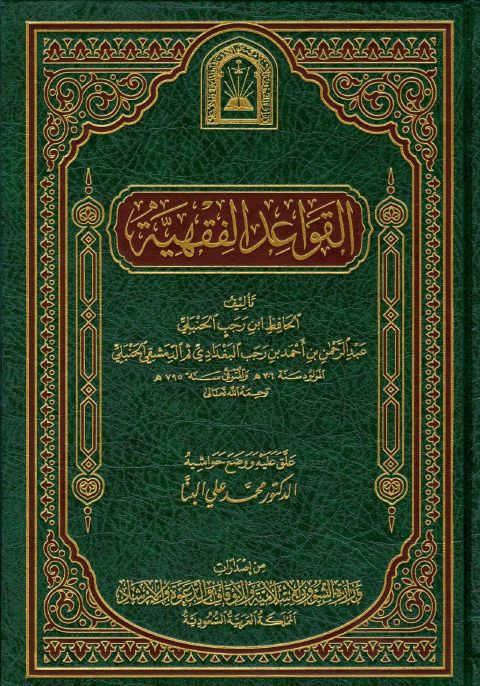
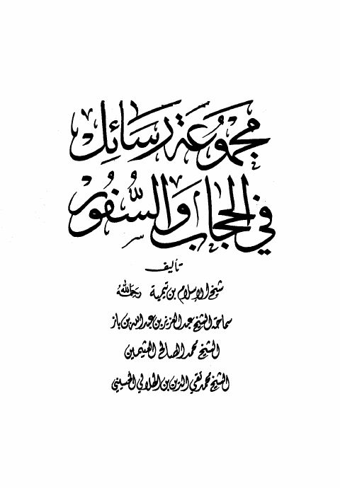
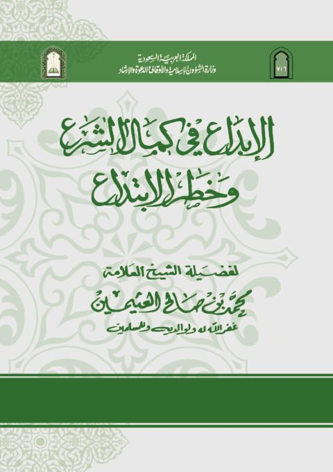

وزارة الشؤون الإسلامية والأوقاف والدعوة والإرشاد
Publisher
Resources

القواعد الفقهية- ابن رجب القواعد الفقهية- ابن رجب عبد الرحمن بن أحمد بن رجب الحنبلي
مجموعة رسائل في الحجاب والسفور مجموعة رسائل في الحجاب والسفور ابن تيمية • العثيمين • ابن باز • الحسيني صحيح مسلم
صحيح مسلم
مسلم بن الحجاج بن مسلم القشيري النيسابوري
صحيح مسلم
صحيح مسلم
مسلم بن الحجاج بن مسلم القشيري النيسابوري

الإبداع في كمال الشرع وخطر الابتداع الإبداع في كمال الشرع وخطر الابتداع محمد بن صالح العثيمين